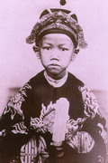

NHỮNG CÂU HỎI " XẤC XƯỢC "

Trong buổi lễ đăng quang, sau kho ở bên ngoài 21 tiếng súng lệnh nổ vang báo hiệu buổi lễ bắt đầu, viên Toàn quyền theo nghi lễ đọc chúc từ khai mạc. Vua Duy tân bước xuống ngai đứng nghe. Vua mặc bộ đồ đại triều nặng nề mà phải đứng nghe viên Toàn Quyền đọc chúc từ quá lâu nên rất khó chịu. Tuy nhiên, ngoài mặt vua vẫn giữ được vẻ bình thản và trang nghiêm. Đến khi viên Toàn Quyền dứt lời, vua Duy tân tiến tới bắt tay và hỏi gọn lỏn ( bằng tiếng Pháp)
- Ông đọc chúc từ lâu như vậy, ông có mệt không?
làm cho viên Toàn Quyền chưng hửng.
Trước đó, khi các viên chức cao cấp Pháp đến chào vua, mặc dầu vua biết rõ hai vị đại diện cao cấp nhất của chính quyền Bảo Hộ, nhưng vẫn giả vờ không biết, hỏi:
- " Trong các ông đây, ai là Toàn Quyền, ai là Khâm Sứ?
Các câu hỏi của vua Duy tân có vẻ ngây thơ, nhưng thật là mỉa mai và thâm thúu
( Theo lời kể của ông Tôn Thất Sa )
ÔNG VUA TINH NGHỊCH NHƯNG TẾ NHỊ
Năm 1911, ông Tôn Thất Sa được Khâm Sứ Trung Kỳ cử vào nặn tượng vua Duy tân theo mẫu sống để Pháp đem sang trưng bày tại cuộc đấu xảo Paris tổ chức vào năm sau. Trong khỏang hơn một tháng, ngày hai buổi, mỗi buổi một giờ, vua mặc đại triều ra ngồi trên ngai vàng đặt ở giữa điện Dưỡng Tâm để cho ông Sa nặn tượng.
Trong mấy buổi đầu, trước sự có mặt của phụ đạo Pháp Eberhardt, nhà vua giữ thái độ dè dặt, không hề nói với ông Sa một lời.
Về sau nhà vua lựa khi Eberhardt vắng mặt mới ngồi làm kiểu và lúc đó ông thân mật, ân cần hỏi thăm gia đình, cuộc sống của ngưoi nặn tượng. Vua cho phép ông Sa cởi áo ngoài để nặn tượng cho thoải mái, có khi còn sai người đem trà ra mời ông Sa dùng, xem như một người thân.
Thế nhưng khi mặt của pho tượng nặn gần xong thì lạ thay, mặt và mũi vẫn y nguyên, nhưng cái miệng thì vểu ra và nhe răng như mỉa mai, chế nhạo ai, làm ông Sa rất bàng hoàng, sửng sốt. Khi vua lại ra ngồi làm kiểu, ông lặng lẽ chữa lại những chỗ bị sửa, nhà vua cũng không nói gì. Qua hôm sau, việc " chơi khăm " hôm trước lại y hệt, làm cho ông Sa tức đến sôi gan và bí mật tìm ra thủ phạm cho bằng được.
Đến ngày thứ ba, khi về nhà ăn cơm trưa xong, ông Sa không ngủ trưa mà lén đi vào điện Dưỡng tâm. Tại đây, một cảnh tượng làm ông suýt té ngữa vì ngạc nhiên: chính vua Duy Tân, tay trái cầm một cái gương soi, tay phải măn mo nơi mặt pho tượng, miệng của vua vểu ra để lộ hai hàm răng! Thỉnh thoảng vua nhìn mặt mình trong gương rồi quay sang nhìn mặt pho tượng để nắn theo ý muốn của mình. Khi bị ông Sa " bắt quả tang ", vua cười nói:
- Ta muốn pho tượng của ta chế nhạo cả nước Pháp khi công trình ấy được đưa qua đấu xảo ở Paris.
- Tâu Hoàng Thượng, nhưng Hoàng Thượng có nghĩ rằng như vậy ông Khâm sứ có thể nghiêm trị tôi không?
- Té ta rứa a? Ta không nghĩ đến, thôi ta xin lỡi thầy.
Rồi nhà vua leo lên ngai ngồi để ông Sa sữa chữa lại cái miệng của pho tượng và tiến hành công việc của ông.
Về sau công trình hoàn thành tốt đẹp, ông Sa lại được vào Đại Nội để tiếp tục họa chân dung vua theo nhiều cách: sơn dầu, thủy mạc, bút chì... Cứ mỗi lần họa xong một bức và tiếp tục qua bức khác, ông thấy một bàn tay nho nhỏ xinh xinh thọc vào túi áo bà ba của mình, nhưng ông không dám nhìn vào, tuy biết đó là bàn tay của nhà vua.
Đợi đến khi ra khỏi điện Dưỡng Tâm rồi, ông thò tay vào túi áo thì thấy đó là tờ giấy bạc. Thì ra nhà vua đã tế nhị và kín đáo trả tiền công cho ông. Chứ một bức họa cỡ lớn thì 50 đồng. Ông Sa rất lấy làm cảm động, một phần vì cử chỉ tế nhị của vua và phần khác, vào năm 19911, đó là những số tiền lớn gấp mấy lần số lương hàng tháng của ông lúc này....
(....)
Sau này, không được vào Đại Nội nữa do lệnh cấm của người Pháp, nhưng hình ảnh vị vua thiếu niên thông minh, tinh nghịch mà tế nhị đó vẫn làm cho ông Sa nhớ mãi và tiếc nuối.
( Theo Hoàng Trọng Thược )